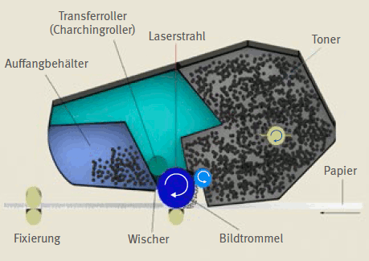

Am Bildschirmarbeitsplatz werden überwiegend Laser- oder Tintenstrahldrucker eingesetzt. Diese Geräte können direkt am Arbeitsplatz oder zentral als sogenannte Abteilungsdrucker eingesetzt werden. Wird ein Drucker als Abteilungsdrucker von mehreren Personen benutzt, sollte er in einem separaten Raum betrieben werden. Dies ist weniger störend und der Gang zum Drucker außerdem aus ergonomischen Gründen eine wünschenswerte Unterbrechung der sitzenden Tätigkeit, was auch für Einzelplatzdrucker zu empfehlen ist.
Laserdrucker arbeiten nach dem vom Kopierer her bekannten Prinzip der elektrostatischen Aufladung (Abbildung 38). Ein Laserstrahl verändert die elektrostatischen Eigenschaften auf der Druckertrommel, sodass ein latentes Abbild der Druckseite entsteht. An diesen Stellen haftet das zugeführte Tonerpulver, bevor es auf das Papier übertragen und dort thermisch fixiert wird. Damit dieser Prozess gelingt, besteht das Tonerpulver aus drei Komponenten:
 |
Abb. 38 Prinzip des Laserdruckers
Laserdrucker benötigen nach dem Einschalten eine kurze Anwärmzeit der Fixiereinheit, bevor die erste Seite gedruckt wird. Über einen eingebauten Lüfter wird die Prozesswärme abgeführt.
Die Vorteile des Laserdruckers sind schnelle, qualitativ hochwertige Ausdrucke zu geringen Seitenkosten. Neben den monochromen Laserdruckern, die ausschließlich mit schwarzem Tonerpulver betrieben werden, kommen zunehmend Farb-Laserdrucker zum Einsatz.
Moderne Laserdrucker setzen während des Druckvorgangs keine relevanten Mengen Tonerstaub und Ozon frei. Dies wurde in verschiedenen Studien nachgewiesen. Auch der verfahrensbedingte Ausstoß von sogenannten flüchtigen Kohlenwasserstoffen ist so gering, dass ein Nachweis in normal belüfteten Büroräumen kaum gelingt. Besondere Arbeitsschutzmaßnahmen sind deshalb beim Betrieb von Laserdruckern nicht nötig. Dies bestätigen auch wissenschaftliche Untersuchungen, die eine gesundheitliche Gefährdung beim Umgang mit den Geräten im Büro als sehr unwahrscheinlich ansehen.
Mit dem Nachfüllen von Toner oder dem Auswechseln der Tonerkartuschen sollten nur Beschäftigte betraut werden, die hierzu eine gesonderte Einweisung erhalten haben. Aus Unkenntnis werden sonst leicht feine Abdichtungen beschädigt oder es wird Tonerpulver verschüttet. Wenn durch Defekte oder unsachgemäßen Umgang Tonerpulver verschüttet wird, sollte es umgehend mit einem feuchten Tuch aufgenommen und nicht aufgewirbelt werden. Verschmutzte Kleidung oder Hände sollten mit kaltem Wasser und Seife gereinigt werden.
Um einen störungsfreien und emissionsarmen Betrieb der Geräte zu gewährleisten, ist die regelmäßige Wartung von großer Bedeutung. Die Wartungsintervalle richten sich nach Arbeitsweise und Beanspruchung des Druckers und können nur vom Hersteller vorgegeben werden.
Im Tintenstrahl-Drucker werden sehr kleine Tintentröpfchen mit hoher Geschwindigkeit durch eine Düse zielgenau auf das Papier geschleudert.
Die Hauptbestandteile der Tinten sind Wasser, wasserlösliche Stoffe, Farbpigmente und Lösungsmittel in geringen Mengenanteilen. Tintendrucker benötigen keinen Lüfter und haben keine Anwärmzeit, sodass der Ausdruck sofort starten kann. Geräusche werden nur durch die Walzen- und Papiereinzugsbewegung verursacht.
Moderne Tintenstrahldrucker erreichen ähnliche Druckgeschwindigkeiten wie Laserdrucker und sind gleichfalls dokumentenecht.
Bisherige Forschungsergebnisse zu Emissionen aus Tintenstrahldruckern mit hohen Druckgeschwindigkeiten bestätigen, dass diese keine relevanten Konzentrationen an sehr flüchtigen Kohlenwasserstoffen, Partikeln oder Staub emittieren. Die gemessenen Konzentrationen lagen in einem insgesamt sehr niedrigen Niveau und Tintenstrahldrucker emittieren darüber hinaus keinerlei Ozon.
Tintenstrahl-Drucker sind günstig in der Anschaffung und eignen sich gut für farbige Darstellungen, insbesondere Fotos und Grafiken. Mit allen Druckern können neben Papier auch Etiketten und Folien bedruckt werden.
Laser- und Tintenstrahl-Drucker werden auch als sogenannte Kombi- oder All-in-one-Geräte hergestellt. Sie vereinen Drucker, Scanner, Fax und Kopierer in einem Gerät und sind speziell für kleine Büros oder Telearbeitsplätze geeignet.
Weitere Literatur
|